Most actions in Silent Storm are taken in Combat
screen. Here your characters accomplish objectives, collect clues, encounter
enemies and fight them; the outcome of the combat is usually unpredictable…
Your squad gets into one of the game zones from the region map when you select
a scenario zone, encounter a random enemy or set up camp.
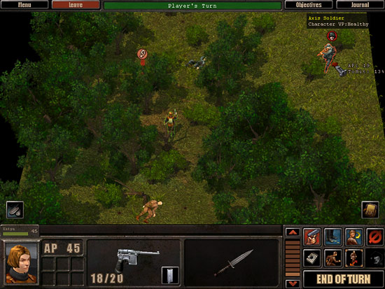
The Combat screen has three main sections: control panel
at the top, game field at the centre (the main screen section) and the game
panel at the bottom.
Control panel
The upper screen section displays control panel with 4 buttons
and the current turn indicator in the middle. The buttons have the following
functions:
|
Menu | Calls up the game menu (alternatively, press <F10>
key)s
|
|
Exit | Leaves the zone for the region map; this button only
works in real-time mode, and then only under certain conditions (for detailed
descriptions of these conditions and the corresponding look of the button,
please refer to Exiting Zones section)
|
|
Objectives | Calls up Objectives screen (in script missions
only)
|
|
Journal | Calls up Journal containing all found clues and
hints
|
The indicator in the middle of the panel shows the current
state of the game (by its colour and a message in the centre). In real-time mode the panel is green and displays no messages. In turn-based
mode the panel changes:
| Player's turn |
«Player's Turn»
message against green background |
| Ally's and
Neutrals turn |
«Allies' Turn»» message against blue background |
| Opponent's
turn |
«Enemy's Turn»
message against red background |
Plus, during the opposition's turn this indicator works
as progress indicator: the extra-bright bar moves from left to right showing
the amount of APs spent by the AI-controlled characters.
When any character spots a new enemy and the turn is interrupted,
the panel temporarily turns bright yellow.
Game field
The game field displays the section of the current zone
where you are. By controlling the camera, you can view any part of the area
and all objects located there — plants, roads, buildings etc.; view various
floors of the buildings, zoom in and out. Note that you can only see enemy
and neutral characters, weapons and ammunition lying on the ground if your
own or allied characters can see them.
Clues' and hints' icons
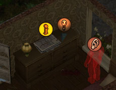
Clues (specified in your objectives) and hints have special
icons which are always displayed above them when the appropriate object becomes
visible to any of your characters:
Yellow circle with exclamation mark — clue (document, item
or character);
Brown circle with lamp — hint on the gameplay.
If these items are outside your characters' field of vision,
their icons are displayed differently, depending on the game's difficulty.
In Normal game, the icons are always displayed. In Hard or Impossible game,
they only become visible after one of your characters spots them.
Enemies and their icons
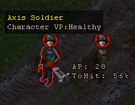
An icon with a helmeted head (coloured against red background, or grey)
is always displayed above the enemy characters visible to any of your own
or allied characters. Characters who are not your opponents do not have such
icons. The icon's colour depends on who can see the enemy character:
Coloured — if the enemy is spotted by the current character
or somebody from the selected group;
Grey — if the enemy is spotted by an unselected character
or an ally.
If the enemy character is also a clue (one of your objectives),
a clue icon will be displayed above him as a higher priority one.
People detected by your squad members by ear but not yet
visible to them, are indicated by an ear-shaped icon. Such icons usually indicate
an enemy, but that's by no means certain: your characters cannot tell enemies
from neutrals by ear.
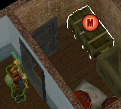
Mines and booby-traps icons.
Some places of the mission zones may be planted with mines
and booby-traps, set on the doors, windows and usable any usable objects.
If the location of such dangerous items is known to the members of your squad,
they are marked with the certain symbol – red circle with “M” letter in it.
Your characters will automatically avoid setting them off. The mines and booby-traps
are known if they are planted by your characters, or discovered by your characters
using Engineering or Spot skills.
When a clue, a hint, a spotted enemy or a character detected
by ear are outside the area displayed on the screen, their icons will be placed
at the edge of the game field indicating the direction to move the camera
to to view the item or the character. Also, such icons take tear-shaped form;
the sharp end points in the right direction.
Default actions with icons
If you click on an item's icon, that means the current character
must go and pick the item up (the character must have enough free space in
Inventory panel). Clicking on enemy character's icon or on the icon of a character
detected by ear means issuing command to attack the character — e.g. fire
at him. Exception: you cannot attack an enemy character who is one of your
objectives (a clue) in this way. To attack such a character, place the cursor
over him.
Right-clicking on any item's
or character's icon centres the camera on the item or the character.
Damage and Vitality
When any character in the current zone suffers damage, red
digits «fly away» from them indicating the amount of damage. If
you place the cursor over a character, tooltip appears describing the character's
type and approximate level of his VPs (ranging from Healthy to Critically
Wounded). If your medic can visually assess enemies' Vitality (a special ability
is needed for that), the tooltip will display the exact VP value, not the
approximate estimate. The damage figures and the tooltips allow to assess
various characters' state and select the best target for attack.
When a character is wearing Panzerklein, the damage inflicted
to the armour is shown by the blue digits “flying away” from it.
Contour selection
When you place the mouse cursor over multiple items and
visible characters, they are selected with a colour contour (interactive selection).
The colour depends on the character's status or the item's properties:
| Green |
Your squad
member or an item you can safely use |
| Blue |
Friendly character
(ally) |
| Cyan |
Neutral character |
| Red |
Enemy character |
| White |
Dangerous item
(mine or booby-trap) |
Camera controls
When you start a mission, the camera is usually in default
position behind the characters' back. In the Options screen you can adjust
the camera controls sensitivity (for the mouse movements or the appropriate
keys).
To move the camera, move the mouse cursor to the
screen edge or corner. Alternatively, use <left>, <right>, <up>
and <down> arrow keys. To move camera diagonally press two keys for
that diagonal simultaneously – for example pressing <right>+<up>
keys simultaneously will move the camera towards the top right-hand corner
of the screen.
Clicking on a character's image on the game panel centres
the camera on the character. Alternatively, press <Home> key.
Moving the camera with stationary cursor allows to move the camera using the mouse without changing the cursor
position on the screen Move the mouse in the desired direction while pressing
and holding the right button and <Ctrl>
key, or while pressing and holding the middle button (the mouse wheel).
To zoom in/out, use the mouse wheel or <Page Up>
and <Page Down> keys. Usually the camera stays at a «fixed»
distance from the ground; this distance can be changed within a certain range
— press and hold <Page Up> or <Page Down> key. This feature may
come useful if you need to take a good look at small objects or characters,
or on the contrary see a panoramic view of the scene. When you release the
key, the camera will smoothly return to the nearest «fixed» position.
Turning and inclining the camera allows to find the best angle to view your own or enemy characters.
Press <left>, <right>, <up> and <down> arrow keys
while pressing and holding <Ctrl> key. Alternatively, move the mouse
in the appropriate direction while pressing and holding the right button.
The camera sensitivity to mouse movements can be adjusted in Options screen.
Game panel
The game panel at the bottom of the screen allows you to
control your characters. Above the panel and to the right there's Items button
which calls up the selected character's Inventory panel; to the left there's
Information button; click on it to call up the Informational panel.
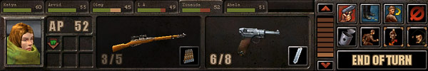
The game panel has the following
elements: characters' tabs; character's image and the current state window;
two quick slots; floor selection bar; and Command Card with a number of buttons.
Characters' tabs
These tabs allow you to view the current state of all your
characters quickly. Each tab displays the character's name and a coloured
bar indicating their vitality and available APs. Use the tabs to select characters,
distribute equipment and heal the wounded. Double-clicking on the tab selects
the character and centres the camera on him.
If character is wearing the Panzerklein armoured suit, there
will be two bars on the tab. Top one shows the vitality of the character and
the bottom (blue one) shows the state of the armoured suit taking the damage
sustained by the suit into account.
Selecting characters and groups
One of your characters is always selected during the game;
his image is displayed on the game panel. On the game field the selected character
is marked with green contour. To select a character (make him active), click
on his tab. Alternatively, click on the character directly on the game field.
<Tab> key allows to select the next squad member (going through the
tabs from left to right, in circle). Double-clicking on the active character's
image centres the camera on him.
To select several characters, press and hold <Ctrl>
or <Shift> key and click on the tabs of the characters you want to include
in the group. Alternatively, use a «rubber frame» on the game field.
Imagine a rectangle covering all the characters you want to select; place
the cursor over one of the rectangle's vertexes, press and hold the left mouse
button and move the mouse diagonally to the opposite vertex. The selected
area will be darkened; after you release the left mouse button, all characters
within the rectangle will be selected. When you select a group, the game panel
displays images of all your characters; the selected ones will be looking
at you. To remove character from the selection, click on her or her portrait
while holding <Ctrl> or <Shift> button.
You can issue commands to selected characters (if you selected
a group, the commands will be carried out by all group members). To disband
a group, click on any group member's tab.
Character's Current State window
Character's Current State window has two sections. The top
one displays the current AP value, the bottom one has 6 slots and shows critical
damage icons (critical damage affects characters' abilities, see Quick Start
section of this manual for more). If you place the cursor over one of these
items, a detailed tooltip will be displayed. The icon's colour indicates temporary
(blue) or permanent (red) damage.
The table
contains the different icons of the character critical conditions (for more
information on the critical conditions and healing them see “RPG and Combat
systems”, “Critical damage”)
Note that
icons with temporary effect may have twin icons for the same critical condition
with permanent effect. Temporary conditions have blue background and permanent
– a red one.
| 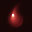 |
Critical bleeding (always
permanent). |
| |
Temporary stun |
| |
Permanent VP reduction |
| |
Temporary AP reduction |
| |
Permanent accuracy reduction.
|
| |
Temporary blindness. |
| 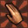 |
Permanent inability to
use arms |
| 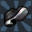 |
Temporary inability to
move. |
| |
Permanent deafness |
| |
Character is being healed. |
Quick slots
At the centre of the game panel there're two slots for items
owned by the active character. One of the items the character holds in hands;
that's primary item displayed in the slot in normal colour. The item in the
other slot is secondary (dimmed). You can easily make the secondary item the
primary one (i.e. make the character take it in hands instead of the other),
and vice versa: simply click on the appropriate slot. This action does not
cost any APs. Characters can hold any of the items they own except ammunition.
However, if an item which uses ammunition (e.g. firearms) is in the slot,
next to it is displayed Reload button with ammunition symbol. The button's
colour indicates whether it's possible to reload the weapon now: if the character
doesn't have enough APs, the button becomes bluish (inactive).
To replace an item in the slot, open the character's Inventory
panel (click on the button above the game panel and to the right, or press
<I> key), then click on the item you want (to «attach» it
to the cursor) and drag it to the slot. Then return the old item to the panel
(it must have enough free space; click on Arrange button if need be). Swapping
or switching items doesn't involve spending APs.
Viewing various floors
Vertical bar allowing to view various floors is located
between Item slots and Commands Card. Switching between floors doesn't change
the camera position; part of the building is simply «removed» to
provide a better view of the inside. You can view floors below the ground
(e.g. to enable your characters to explore basements). Click on the arrow
buttons at the bar ends to display various floors; an easier alternative is
to press <Num +> (grey plus) and <Num –> (grey minus) keys on
the Numbers pad. The «+» symbol displays higher floors all the way up to the
roof; the «–» symbol, on the contrary, «removes» floors and lowers
the view all the way down to underground levels.
Command Card
The right section of the game panel displays Command Card
with eight command buttons plus End of Turn button. Some of the buttons work
as top level menus: clicking on them displays more buttons for issuing varieties
of the selected command. To cancel and return to the regular commands set,
click on Ä button. Please see the next section of this manual for more on controlling
your characters.
End of Turn button is mostly used in turn-based mode to
pass the turn to the opposition. In real-time mode this button allows to Start
Combat, switching the game to turn-based mode at the same time. It's useful
if you want to attack your enemy without having to wait until the game switches
to turn-based mode automatically. When you click on Start Combat button, the
program processes the current game situation taking into account each side's
priorities and decides who will have the first turn. If
the enemy didn't spot your character, you will probably get to move first.
Controlling characters
The most common commands can be issued to characters directly
on the map: just click on the destination point or on the item with associated default
action (e.g. Attack the enemy). The set of buttons at the right-hand section
of the game panel give access to all available commands; many commands can
be issued via the keyboard. The following buttons are displayed in the regular
mode:
| Act
(A) |
Move
(M) |
Look
(L) |
Cancel
(Esc) |
| 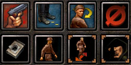 |
| Change attack mode |
Change movement mode |
Strafe Mode |
Hide Mode |
Action (Attack, Heal, Set Mine etc.)
— this button's appearance depends on the item held by the character. Clicking
on it displays one of the Action or Attack cursors to choose the target or
the object for the character's action. The AP cost is displayed next to
the cursor. Alternatively, press <A> key.
| Snap
(Q) |
Aimed
(W) |
Careful
(E) |
Snipe
(T) |
| 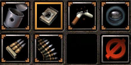 |
| Short Burst (F) |
Long Burst (G) |
|
Cancel
(Esc) |
Move — clicking on this button allows to set a destination point for the
character; if game is in real-time mode he'll start moving there immediately.
If you mapped the route in advance, there will be a yellow arrow on the button.
In that case clicking on the button tells the character to move on to the
destination. The same arrow appears if the character didn't make the whole
way during the turn and had to stop; clicking on this button during the next
turn continues the movement. The AP cost is displayed in a circle at the destination
point. Alternatively, press <M> key.
| 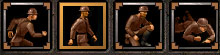 |
| Run
(Z) |
Walk
(X) |
Crouch
(C) |
Prone
(V) |
Look — tells the character to look at the specified direction. When you
click on this button, Look cursor appears allowing to set the direction the
character should look at. This action costs 2 APs. Alternatively, press <L>
key.
Cancel — cancels the previous command providing it hasn't been carried out;
doesn't cost any APs. Alternatively, press <Esc> key.
Change Shooting Mode (Fire, Grenade)
— clicking on this button calls up next-level menu allowing to choose one
of the available attack modes for the active weapon. For firearms, available
modes depend on the weapon type; for grenades there are two possible actions:
Throw or Set Booby-Trap. After attack mode is selected, appropriate button
is displayed on the panel. The mode is remembered for all weapons and restored
when you switch weapons or move them from Inventory panel to the active slot.
Switching modes doesn't cost any APs. Alternatively, press the following keys:
<[> — previous mode; <]> — next mode; <Q>, <W>, <E>
— Snap Shot, Aimed Shot, Careful Shot; <F>, <G> — Short Burst,
Long Burst; <T> — Snipe mode.
Change Movement Mode — this
button calls up next-level menu allowing to choose one of the available movement
modes: Run, Walk, Crouch or Prone (with three corresponding stances: Stand,
Crouch or Prone). The current movement
mode is indicated by the image on the mode switch button. Switching movement
modes costs APs; the cost is displayed in the tooltip next to the cursor.
Alternatively, press the following keys: <Z>, <X>, <C>,
<V> — Run, Walk, Crouch, Prone.
Strafe Mode — this button
switches on/off the movement mode when the character restores orientation
(the direction he looks at) at the destination point. When this mode is activated,
the button is selected with a yellow frame. Switching this mode doesn't cost
any APs. Alternatively, press <D> key.
Hide — clicking on this button tells the character to hide to become less
visible to the enemy. A dark halo appears on the screen around hiding characters.
When this mode is activated, the button is selected with a yellow frame. Hiding
costs APs; the cost is displayed in the tooltip next to the cursor. Cancelling
hiding is free. Please note that you can only hide your characters until they
are detected by the opposition; after that this command becomes unavailable.
Alternatively, press <H> key.
Hide mode becomes inactive after any noisy action — shooting
firearm without silencer, throwing grenades.
Movement modes
To get your characters moving, you must set destination
points for them. In real-time mode it's sufficient to click on a point on
the map; in turn-based mode clicking on the destination point maps the route;
to start movement, either double-click or click on Move button.
If character is in “walking mode”, double-click on the destination
in Real-Time mode will switch the character to run mode. Let's take a look
at various movement modes and their features.
Running is the most efficient mode for covering large distances; it has minimum
AP cost. However, running makes the character easier to spot. When the character
stops running, he has fewer chances to hit the target during the same turn.
On the other hand, the character who has moved a lot during the current turn
is more difficult to hit. The command's hot key: <Z>.
Walking — the most commonly used movement mode; average AP cost. The only
movement mode allowing to carry another character (AP cost for such movement
is greatly increased, so movement will be slower). The command's hot key:
<X>.
If you need to move stealthily, use Crouching mode.
That's an easier way to approach the enemy from behind to catch him unawares
and hit with a melee weapon, or fire at point-blank range. Crouching character
is a more difficult target for enemy attack than a standing one. The speed
is slower than walking, AP cost is higher. The command's hot key: <C>.
Prone is the slowest movement
mode, and the one which makes the character the hardest to detect since he
makes almost no noise at all. However, crawling involves the highest AP cost.
The character must have sufficient space around him to be able to lie down.
The command's hot key: <V>.
Note: characters in Panzerklein armoured suits can only
walk, and with a slower speed than normally (the same as when carrying another
character). AP cost is much higher.
Mapping routes
When you click on a part of a landscape with the cursor,
a possible route is displayed as a coloured dotted line; the destination point
is marked with a coloured circle. In real-time mode this line is always green.
In turn-based mode various sections of the route may have different colours;
the AP cost of getting to the destination point is displayed in the circle.
The section of the route where the AP cost will not affect the character's
Attack ability is displayed in green. The section of the route where the character
will have to spend some APs needed to attack is displayed in yellow. The section
the character will not be able to make during the current turn is displayed
in red. Note: if the character has been switched to Attack mode demanding
all available APs (Careful Shot or Long Burst), the mapped route will always
begin with a yellow line.
If different movement modes have been specified to characters,
when you issue Move command they'll start moving each in their own mode. To
switch all characters to the same movement mode, click on the appropriate
button on the Command Card or press the appropriate key.
Visibility and hearing range
All characters can see the area at 180 degrees around them;
they can't see behind their backs. The range the characters can see the enemy
at depends on the time of day, the enemy's position and whether enemy hiding
or not. Some abilities allow characters to see better at night or detect hidden
enemies at a large distance.
Characters can hear steps around them, including from behind
buildings' walls, and steps on the floor above or below them. Characters can
hear sounds all around them regardless of the time of day. Enemy's stance
cannot be told by the sounds, so all characters detected by ear are displayed
as standing semi-transparent figures surrounded by a halo, with an ear-shaped
icon above them. The halo stays still until the sound source reveals itself
by some other means. In some cases this leads to appearance of «ghosts»,
though in reality the character may be unconscious or dead. To make the halo
disappear, some of your or allied characters must take a look at the place.
Stationary or hidden characters cannot be detected by ear
until they reveal themselves in some way — e.g. become visible or start firing.
Using items
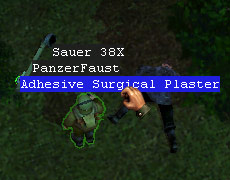
When you see an item lying around, place the cursor over it; the cursor
will change shape to a clenched hand with AP cost of picking the item up displayed
next to it. The item will be highlighted with green contour. To take the item,
click on it. Characters can pick up items providing their Inventory panel
has enough free space; otherwise the action is impossible. In that case try
to arrange the items on the panel: open it and click on Arrange button. Alternatively,
give one of the items to another character or throw an unwanted item away.
If the character's Inventory panel is opened when you're
picking up an item, the item will not go to the panel automatically but remain
«attached» to the cursor. You can place it on the panel or in one
of the character's two quick slots. If the space is already taken, the new
item replaces the old one.
Some items are too small and difficult to see or to pick
up using the cursor. To view items' positions and names, press and hold <Alt>
key. A message with the item's name will be displayed above each item any
of your characters can see. To pick up the item, simply click on the name;
after that you can release <Alt> key. This way you can pick up all items;
it's particularly handy for handling things inside boxes.
To pass an item to another character, pick it up with the
cursor and drag to the appropriate character's tab. If the characters are
standing next to each other, it costs no APs; otherwise you'll have to spend
the amount of APs needed to walk to the recipient character. To perform this
action, click on the character's tab or directly on the character. Note that
the cursor with an item attached is bigger; you must click on the tab with
the cursor's active section, i.e. the index finger. The action will be performed
providing the recipient character has sufficient free space on his Inventory
panel. You can only pass items to your squad members.
To throw an item away, pick it up with the mouse cursor
and click on any part of landscape. The character will throw the item in the
specified direction. You can pick up discarded items again later on if need
be.
Bodies of unconscious or dead characters can be picked up
and carried. Place the cursor over a body; it will change shape to Action
and the AP cost will be displayed next to it. To pick up the body, click on
it. To pick up your own character, you can click on his tab. While the body
is being carried, the character cannot use weapons or other things, change
position etc. The speed is slower than normal walking. The character who carries
a body cannot pull himself up, jump down, climb up or down vertical ladders.
If necessary the body can be dropped — click on the appropriate button on
Command Card. Dropping a body costs no APs.
Note: characters in Panzerklein armoured suits cannot
carry bodies.
Healing
You should treat the wounded members of your squad in time;
this way you'll avoid further waste of VPs due to bleeding and partially restore
the abilities affected by the wounds. The efficiency of medical assistance
depends on the medic's skills.
To provide help to a group member, the character who's going
to heal him (usually it's medic) must take the appropriate medical item (dressing
material, a tool or a medicine). The cursor
will change shape to Heal when placed over a wounded squad member or his tab;
in turn-based mode the AP cost will be displayed next to it. After
medic starts healing, he will not be able to take any other action during
the whole process which can take several turns (note that you can stop the
healing at any moment). The wounded character can take certain actions while
being treated: he cannot move but can fire from stationary position.
Note: characters wearing Panzerklein armoured suits cannot
be treated by medic; some suit models may have in-built first-aid kits.
Dialogues
At base and in some missions the main hero will need to
talk to other characters (allied or neutral). When the cursor is placed over
a character with whom you need to talk, it changes shape to Dialogue. To start
talking, the main hero must approach the character. The dialogue is displayed
in the window appearing on the screen instead of the game panel. It shows
the pictures of both characters; the speaking character's picture is highlighted
with a brighter colour. Under sub-titles to the left and right there're two
buttons: Back and Next. The first returns you to the previous line, the second
moves on to the next one. At the end of dialogue Next button changes to End
Dialog button. When the dialogue is completed the window closes, and the most
important information appears as a mission objective or is recorded in Journal.
To skip the current line and move on to the next one, press <Space>
bar or click with a mouse. You can also skip the entire dialogue — press <Esc> key.
Attack
This section describes how to use firearms which are very
important in the game. Use of other weapons is described at the end of the
section.
Firing modes
All firearms are designed for particular firing modes; some
weapons can be used in more ways than others. Most weapons can fire single
shots; some can fire in bursts; certain makes of submachine-guns are designed
to fire only in bursts. Firing modes the weapon is designed for, and AP costs of each mode
are described in weapons' tooltips.
There are three kinds of single shots in the game: Snap
Shot, Aimed Shot and Careful Shot. They have different AP costs and probabilities
of hitting the target.
Snap Shots are fired almost
without taking aim. On the plus side, the AP costs
are low which makes this mode quite efficient when firing at a very close
range (when probability of hitting the target is high anyway). During one
turn a character can fire several snap shots and get additional chances of
hitting the enemy.
Aimed shots cost more APs
but they're much more efficient in terms of probability of hitting the target.
Usually a character can fire one or two aimed shots during the turn; but that
leaves some APs for other actions — e.g. to take a better position or take
cover.
Careful shot takes all character's
APs; the minimum AP cost is higher than that of an aimed shot. The probability
of hitting the target with a careful shot is about the same as when firing
sniper shots. This mode is efficient for long-range firing, when the objective
is to hit the enemy while the need to take cover against return fire is not
very strong.
Firing in bursts has two varieties: short bursts and
long bursts. Short bursts have average AP costs but the number of rounds
fired is not too high. Long bursts take all the character's APs; as soon as
the APs or bullets run out (or the character noticed he hit the enemy), the
firing stops. Firing in bursts is efficient at small and medium range despite
the low probability of hitting the target with each individual round (displayed
next to the cursor).
To select a firing mode, click on Change Shooting Mode button
on the Command Card and then choose the appropriate button. Alternatively,
press one of the following keys: <Q>, <W> , <E> — Snap Shot,
Aimed Shot, Careful Shot; <F>, <G> — Short Burst, Long Burst,
respectively.
Note: characters wearing Panzerklein armoured suits can
only use specially designed weapons; their firing modes are similar but each
weapon can be used according to its own specifications.
Sniper shooting
A sniper rifle with optical sights is needed for this firing
mode. Efficiency of sniper shooting very much depends on the appropriate skill;
the highest level is achieved by professional snipers. Sniper shooting is
only possible at targets visible to sniper (any other shots can be made by
ear or at the targets visible by other members of the squad or your allies);
if you fire a sniper shot at a target detected by ear, the accuracy will be
the same as with a snap shot. Sniper shooting requires taking careful aim
which can take longer than one turn but ensures very high probability of hitting
the target, including hitting a specific body part. This allows to disable
the target with a single shot. The main drawback is the need for both the
sniper and the target to remain stationary, which is difficult to ensure in
close combat.
Sniper shooting has a number of specific features. First,
the shot is not fired immediately but after taking aim: when you click on
the target, you issue command to start taking aim which involves a certain
AP cost. Second, unlike with other firing modes the actual AP costs for taking
aim can significantly vary. Third, in many cases you can «pass»
the aim-taking over to the next turn, which allows to continue the process
with the rifle already pointed at the target and a high probability of hitting
it.
Note that postponing the sniper's taking aim for the next
turn can be wasted due to a number of reasons: first, if the target disappears
from the sniper's field of vision or moves out of the angle of sight (about
45 degrees); second, if during the opposition's turn the sniper suffers any
critical damage or loses a lot of VPs because of a wound; finally, if the
sniper moves due to a blast wave or the weapon is knocked out of his hands.
To switch to Sniper Shooting mode, click on the appropriate
button on Command Card or press <T> key. To start aiming, place the
cursor over the target and click on it. The sniper will raise the rifle and
point it at the target; after that you'll be able to control the aiming using
the four buttons on Command Card:
Add all APs — use all available
APs for aiming and pass it over to the next turn.
Add and Reserve — use all
available APs for aiming except the amount needed to fire.
Add 10 APs — use 10 APs for
aiming.
Add 1 AP — use 1 AP for aiming.
The two buttons at the bottom of Command Card allow to fire
the shot (alternatively, press <A> key) or cancel sniper shooting (alternatively,
press <Esc> key).
To use your APs efficiently, try checking the probability
of hitting the target often, and stop allocating more APs for aiming when
the probability becomes sufficiently high. Sniper needs less APs to fire a
shot with the same efficiency as firing a careful shot in regular mode. If
you don't hit the target with the first shot, you might want to consider investing
the remaining APs in aiming and passing the firing over to the next turn.
Firing at body parts
If the target is visible you can aim not simply at the character
but at a specific body part. Despite a lower probability of hitting the target,
occasionally this might give you an advantage since you can critically damage
the enemy and radically limit his abilities. To select a specific body part
to aim at, press and hold one of the following keys on the Numbers pad.
| <8> — aim at the head;
<4> — aim at the left hand;
<5> — aim at the body;
<6> — aim at the right hand;
<1> — aim at the left leg;
<3> — aim at the right leg. |
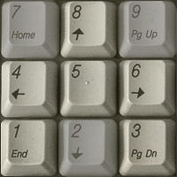 |
When one of the above keys is pressed a special cursor appears,
with the appropriate body part marked in red.
Firing at invisible targets
Your characters can fire not only at the enemies they see
but at the enemies spotted by other members of your squad (marked by grey
icons), and also at invisible targets detected by ear (semi-transparent figures
with ear-shaped icons above them).
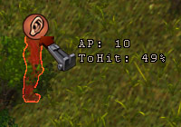
If the character cannot see the target because of an obstacle,
the chance of hitting it depends on the bullet's (shell's) ability to pierce
the obstacle. For example, bush leaves allow to get close to the enemy undetected
and fire an efficient shot at the figure visible to other squad members positioned
elsewhere. If the character cannot see the target because the range exceeds
his range of vision, the ability to hit it depends on the weapon's range.
Sniper shooting or aiming at specific body parts of a target
detected by ear is impossible. Firing at such targets always involves certain
risks. First, you can shoot a neutral character or even a clue character instead
of an enemy, and occasionally that may cause failure of the whole mission.
Second, when you only hear noises made by somebody,
the target's exact stance and location remain unknown so it's much more difficult
to hit it. Finally, you definitely won't always be able to tell if you actually
hit the target due to the «ghosts» on the screen.
Reloading
All firearms need to be reloaded after a while. The character can only reload the weapon he holds; click on Reload button
in the weapons slots on the game panel or press <R> key. In regular
firing modes, when a weapon runs out of ammunition the cursor changes shape
to Reload when you place it over a target; click on the target to reload the
weapon. Reloading costs APs, quite a lot for certain weapons. You can reduce
the cost if you have a special skill, or skip reloading altogether by swapping
an empty weapon for a loaded one during combat.
When you reload, you use exactly as many shells as it takes
to fill the clip or magazine. If the clip or magazine is not completely empty,
some shells will be taken from loaded magazines. You don't have to use exactly
identical magazines to reload — as long as you have the right type of ammunition.
If character does not have the ammunition, necessary to
reload the weapon or reloading is for some reason impossible at the moment,
the reload button becomes unavailable and a red cross is displayed above the
ammunition image.
Stationary guns
In some game zones you'll see guns installed on stationary
platforms. You can't pick them up and take with you, but your characters can
fire them. Usually stationary guns have certain limitations; e.g. mostly they
cannot be turned, so you'll have to wait until the enemy happens to be within
the arc of fire. These guns need special ammunition like cartridge belts or
clips (ammunition form hand-held weapons will not do). Often you'll be able
to find the right kind of ammunition nearby.
When you place the cursor over a stationary gun, it changes
shape to Action. Usually getting in position and ready to fire costs a lot
of APs. The gun type and the current amount of ammunition will be displayed
in the window popping up on the game panel instead of the two character's
slot windows. Stationary guns usually don't have many firing modes, but if
they do you can switch between them in the usual way.
When you're finished firing, click on the stationary gun
again or click on Cancel button; the character will move away and carry on
with his tasks in the regular mode.
Other weapon types
In addition to firearms, your characters can use melee and
throwing weapons, grenades and mines. Using these weapon types is most efficient
if the character has appropriate profession and skills.
Melee weapons don't have different attack modes. On the
plus side, they're silent and don't attract enemy characters' attention. On
the minus side, you must get close to the enemy undetected, and it's not an
easy task for anybody but scout.
Grenades can be used in two different ways: throwing them
or setting up booby-traps at doors, windows or gates. Switching between these
modes is the same as with firearms. To cause damage to an enemy, throw the
grenade under his feet; precision attack is impossible. Also, grenades can
be used to smash doors, blow holes in walls etc. The range of throwing grenades
depends on their weight and the character's Strength; grenadier can do it
best. Grenades can be thrown from behind cover, so the character will not
be damaged by the fragments (you'll need to take cover throwing fragmentation
grenades, otherwise the fragments will damage the character who threw it).
Any character can set up a booby-trap, but a high Engineering skill allows
to set a trap the enemy will find harder to detect.
Mines can be set up on roads where enemy patrols move, or
used to blow holes in fences, walls etc. Any character can set up a mine,
but again a higher Engineering skill makes it more difficult to detect. Mines
and booby-traps are marked with white contour; your characters will walk around
them. Engineering skill or very high Spot skill is needed to detect enemies’
mines and traps; to disarm them, the character must have Engineering skill.
Disarmed mines and grenades can be reused.
Engineering and medical equipment
Engineering equipment is divided into two groups: tools
used for disarming mines and lock-picks. The tools are used exclusively to
disarm dangerous explosives; they don't help you to detect them. To use a
tool, character must take it in hand. Mines cannot be disarmed without such
tools. Some tools require high Engineering skills, but at the same time they
increase the skill level as you use them. Each tool can only be used a limited
number of times.
Lock-picks and keys allow to open locks. Lock-picks are
multi-purpose tools, i.e. you can try to open any lock with them; however,
they can only be used a limited number of times. Every attempt to open a lock
using a pick costs 30 APs; the chances of success depend on Engineering skill
level. Keys can be used any number of times and do not require Engineering
skill (any character can use them). However, each key only opens certain locks.
Usually keys can be found on game zones or taken from dead bodies of enemies.
Your characters don't have to hold a key in hand; it's sufficient to have
it among the character's items.
Medical equipment is divided into three main groups: dressing
materials, surgical tools and medicines. Dressing materials include plasters,
bandages, first-aid kits and styptic powder. These items are used to treat
wounds and stop bleeding. Surgical tools allow to fix critical damage. Many
of them require high-level Medicine skill, but at the same time increase the
skill as you use them. Finally, medicines (pain-killers and stimulators) allow
to temporarily alleviate the effects of damage suffered by characters or increase
some of their parameters (again, temporarily). Using medicines requires high
Medicine skills; also, all of them have certain side-effects: e.g. after a
few turns the treated character's VPs irreversibly drop, or the character
faints; so make sure to examine medicines and their effects carefully before
using them.
Exiting zones
You may or may not be able to leave the current zone for
the region map, depending on the zone type, your mission objectives and your
progress in accomplishing them. You can leave camp for region map at any time,
by clicking on Leave button on the control panel.
To leave a combat zone with enemies (scenario or random
encounter zone), you must either switch to real-time mode or take all members
of your squad to the zone border. Real-time mode means that you are not in
a direct contact with the enemy (if any of them remain in the zone). In that
case Leave button becomes available — it's assumed your group can reach the
zone border without encountering enemy on the way.
The color of the leave button indicates the possibility
of exiting the mission zone.
| Red |
Impossible
to exit. Either the necessary scenario objective is not achieved or
the enemy sees your characters. |
| Yellow |
Exit is possible,
but there are enemies are still present in the combat area. |
| Green |
Exit is possible,
all enemies in the combat area are eliminated. |
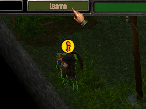
If you're fighting the enemy, there's only one way to leave
the zone — via the zone border. To do that, gather all your squad members
near the zone border not further then 4 steps away, so the leave button becomes
yellow and then click on this button.
When you are performing a scenario mission, there's yet another limitation
regarding exiting the zone: you must accomplish at least one mission objective
(gather at least one clue) enabling you to move on to the next mission. Until
it's done, you cannot leave the zone either using Leave button or via the
zone border. If you underestimated the opposition and cannot accomplish any
such objective, your only course is to load one of the previously saved games
or restart mission.